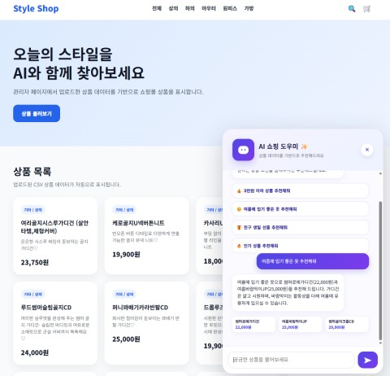
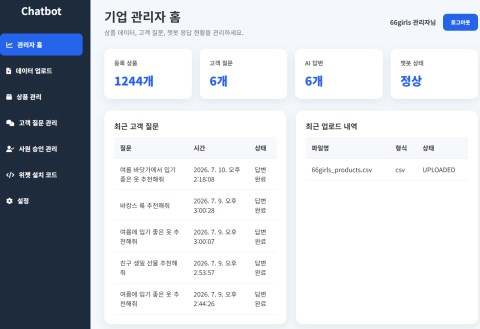
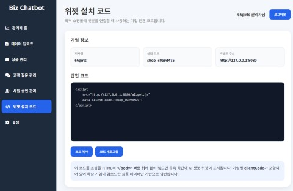

Case Study
BackendAIRAG
WidgetRAG — B2B SaaS RAG 상품 추천 챗봇
2026.06.19 – 2026.07.10 (22일) · 팀 2명 (BE 1 · FE 1) · 백엔드 + RAG 파이프라인 + 크롤링
스크립트 한 줄로 설치하는 B2B SaaS RAG 상품 추천 챗봇입니다.
프로젝트 개요
Problem
쇼핑몰마다 실시간 상담 인력을 두기 어렵고, 범용 챗봇은 실제 상품 데이터를 반영하지 못해 엉뚱한 답변(환각)을 내는 문제가 있었습니다.
Solution
상품 CSV 업로드만으로 상품 DB를 학습한 RAG 챗봇을 자동 생성하고, 검색된 상품 목록 안에서만 답변하도록 설계해 환각을 최소화했습니다. client_code 기반
멀티테넌시로 여러 쇼핑몰을 하나의 엔진으로 동시 운영합니다.
핵심 성과
- ✔ Spring Boot 백엔드 설계·구현 + RAG 파이프라인(임베딩·검색·프롬프트·Fallback) 전체 구현
- ✔ 계측 로그로 업로드 병목(임베딩+색인 95.8%) 진단, 이후 발생한 AI 서버 타임아웃 버그 진단·수정
- ✔ client_code 기반 멀티테넌시 격리 아키텍처 설계 (66girls·Daiso 동시 운영)
시연 영상
아키텍처
- 관리자 웹(Biz Admin)·쇼핑몰 위젯(66girls·Daiso)이 widget.js 한 줄 삽입으로 Spring Boot 백엔드와 REST 통신
- Spring Boot가 인증·상품·RAG 오케스트레이션 담당, PostgreSQL(company/member/product)과 OpenSearch(client_code 필터·kNN) 연동
- Python AI 서버(FastAPI)가 bge-m3 임베딩과 Gemma/EXAONE 응답 생성을 로컬 GPU에서 처리
- 모든 테이블이 companyId(FK)로 연결되어 client_code 기준으로 논리적으로 완전 격리
파란색이 직접 설계·구현한 영역입니다(Backend·RAG 파이프라인·AI 서버 연동). Biz Admin과 쇼핑몰 위젯(widget.js) 프론트엔드는 팀원 담당입니다. LLM은 본인이 Gemma로, 팀원이 EXAONE으로 각각 연동해 두 모델 모두 지원되는 구조를 검증했습니다.
본인 역할
핵심 기여
- ✔ Spring Boot 백엔드 설계·구현 (인증·상품·RAG 오케스트레이션)
- ✔ RAG 파이프라인 구현 (임베딩→검색→Fallback 판단→로그 적재), Gemma 기반 응답 생성 연동 — 팀원이 EXAONE을 추가로 연동해 두 LLM 모두 지원되는 구조를 검증
- ✔ 데이터 크롤링·전처리 (Selenium·BeautifulSoup)
- ✔ OpenSearch·AI 서버(FastAPI) 연동, 서버 기술문서(모델정의서·테이블정의서) 작성
기술 스택
Spring Boot
Java 17
PostgreSQL
Spring Data JPA
Spring Security
OpenSearch
FastAPI
bge-m3
Gemma / EXAONE
Selenium
BeautifulSoup
문제 해결 과정
업로드 성능 진단 — 병목 계측과 타임아웃 버그 수정
🚨 문제
대량 상품 데이터(daiso 12,090개 기준) 업로드 시 처리 시간이 33분 59초로 과도하게 길었습니다.
🔍 원인
각 단계(CSV 파싱+DB 저장, 임베딩+색인)의 소요 시간을 계측 로그로 남겨 비교한 결과, 임베딩+OpenSearch 색인 구간이 전체 처리시간의 약 95.8%(27분
32초)를 차지하는 병목으로 확인됐습니다.
🛠 해결
이 계측 결과를 근거로 팀원이 임베딩 요청을 배치(batch) 단위로 묶어 처리하도록 파이프라인을 재설계했고, 이후 대용량 업로드 과정에서 발생한 AI 서버 타임아웃
문제를 계측 로그를 근거로 진단하고 수정했습니다.
✅ 결과
동일 데이터셋 기준 총 처리시간이 33분 59초에서 16분 13초로 약 52.3% 단축됐습니다(배치 재설계는 팀원 담당, 병목 진단과 이후 타임아웃 버그 수정은 계측
로그를 기반으로 본인이 담당).
회고 — 대량 업로드 시 GPU 리소스를 모니터링하는 체계가 아직 없어, 다음 단계로 개선하고 싶은 부분입니다.
환각(Hallucination) 방지 — 상품이 없어도 답변이 나오는 문제
🚨 문제
검색 결과가 없거나 GPU 서버 응답이 지연·실패할 때, LLM이 실제로 없는 상품을 지어내 답변할 위험이 있었습니다.
🔍 원인
프롬프트에 "검색된 상품 목록 안에서만 답변"하도록 지시해도, 검색 결과 자체가 비어있거나 응답이 실패하는 상황은 별도로 처리되지 않았습니다.
🛠 해결
OpenSearch 검색결과 0건 / GPU 서버 응답지연·타임아웃 / GPU 서버 연결실패 세 가지 조건 중 하나라도 충족되면 목업(mock) 응답으로 대체하는
Fallback 정책을 구현했습니다.
✅ 결과
실제 상품이 검색되지 않은 상황에서 LLM이 상품을 지어내는 경우를 원천 차단했습니다. AI 서버를 실제로 종료한 뒤 /api/chat을 호출하는 장애 주입 테스트로
Fallback 경로가 정상 동작하는지 직접 검증했습니다.
그 외 해결한 문제들
- ✔ Map.of()에 null 값이 포함되면 예외 발생 → HashMap으로 교체
- ✔ 127.0.0.1·localhost 혼용으로 Origin이 달라져 세션 쿠키 공유 실패 → Base URL 오리진 통일
- ✔ 같은 상품이 여러 CSV 파일에 걸쳐 등록되는 경우를 고려해, 마지막 참조가 삭제될 때만 실제로 지우는 소프트 삭제 + 참조 카운트 로직 설계
- ✔ 실데이터 검증 중 CSV BOM·중복 상품ID·영문숫자 혼합ID 발견 → 파싱·정제 로직 사전 보강
화면 캡처



배운 점
멀티테넌시 격리를 물리(WSL 폴더)·논리(OpenSearch 필터, PostgreSQL FK) 두 층으로 나눠 설계하면서, "격리됐다"는 말을 증명하려면 계층별로 각각 검증해야 한다는 걸 배웠습니다.
병목 구간을 추측이 아니라 계측 로그로 먼저 확인(95.8%)하면서, 성능 개선은 감이 아니라 측정에서 시작된다는 걸 체감했습니다.
RAG 파이프라인을 처음부터 끝까지 설계하며, "검색이 잘 되는 것"과 "검색이 안 됐을 때 안전하게 실패하는 것"은 똑같이 중요한 설계 요소라는 걸 배웠습니다.
README에 JWT 미도입, 테스트 코드 부재, CI/CD 부재 같은 "알려진 이슈"를 스스로 정리해두면서, 완성도보다 지금 상태를 정확히 파악하고 있는 게 더 중요하다는 걸 느꼈습니다.